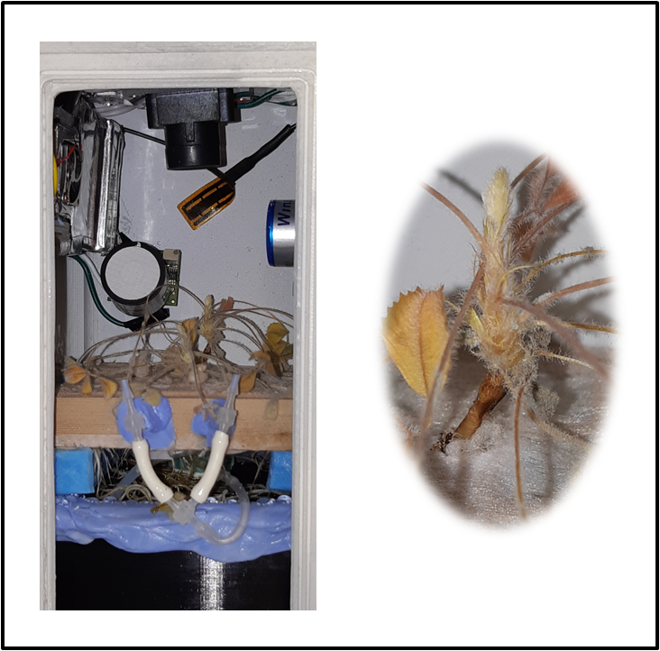
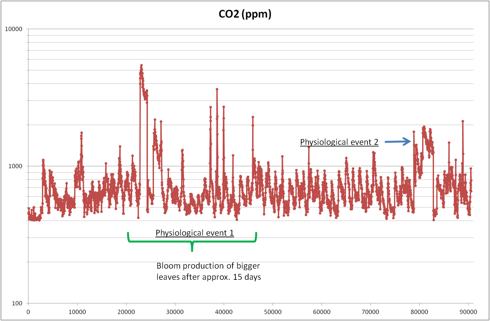

Spacebean project aims to create a model experiment to future autonomous plant cultivation system in microgravity. Its development is a basis that will ultimatly help the next generation of vegetal food production systems in many ways: - use a mini-incubator to perfom several autonomous tests with different species at a very cheap cost - produce food for long intersideral journeys in which no food supply is possible from Earth - produce food before the arrival of astronauts on a place located far away from Earth
The Spacebean experiment will be held in a 3U CubeSat. It aims to miniaturize a plant production system to allow the plants growing and to assess their development through sensors and analytical instruments embedded into a mini-incubator.
We developped a 2U incubator that works with a minimal energy consumption (less than 4 watts), that has a total weight below 1.5 kg and is able to remove plants ehylene production thanks to an ethylene scrubber.
The incubator is composed of CO2, O2, Ethylene, Temperature and Humidity sensors. It has an ethylene scrubber that performs photocatalysis with a UV light on TiO2. There are also a camera, a peristaltic pump and a heater. An Arduino Mega contains a PID that helps to control a photoperiod of 20h day/4h night, and the regulation of the temperature and relative humidity inside. A description of the mini-incubator is viewable on this video.
Recent tests showed us a normal development of Medicago truncatula plantlets that germinated and grown until the production of their first leaves in less than one week (photo at left).
After two weeks, we observed that they tripled their height and they developped big trifoliate leaves (photo at right).


Our latest cultivation tests gave us two adult plants grown well and no contamination were observed. They have long root lentgh (30 to 40 cm). Their leaves are strongly attached to the leafy stem.

Apical bud is hairy as for the M. truncatulate plants cultivated under strong CO2 concentration.
In this assay, no contamination were detected in the dispositive and the incubator remained waterproof under 99% humidity.

2019/03/22 Last update